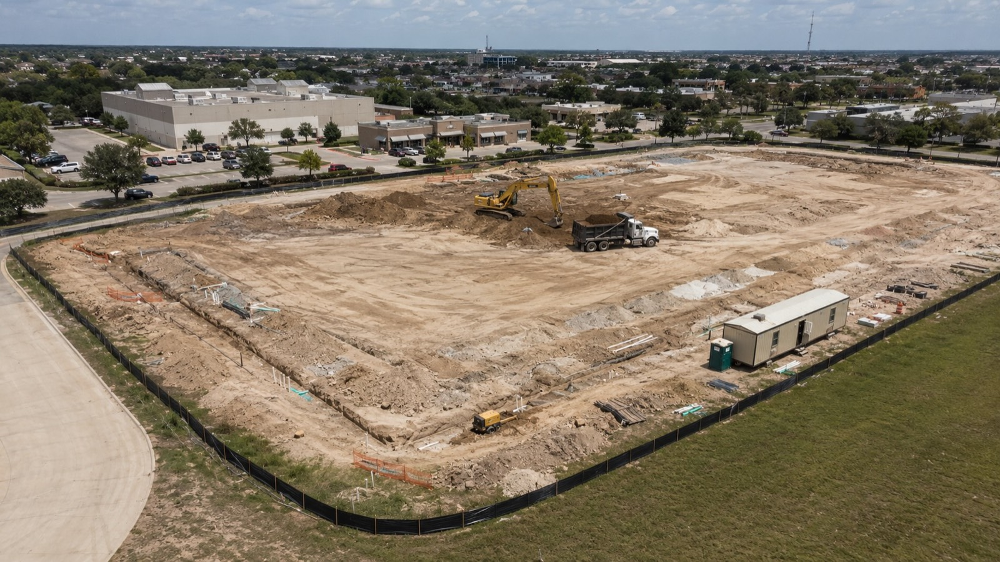

Blog · Commercial Guide · Published June 2026
Commercial Site Development: A Process Overview

"Site development" means different things to different people on a job. To an architect, it's everything outside the building footprint. To a civil engineer, it's the drawings that get a pad ready for vertical. To an owner, it's the bill before they can even start building. Here's the honest version of what commercial site development includes, phase by phase — for owners, architects, and PMs who want to understand the work before they bid it.
What "site development" actually covers
Everything that turns raw or repurposed land into a buildable pad — plus most of the work around the building once vertical is underway:
- Land clearing and demolition of existing structures
- Earthwork: cut/fill, rough and final grading, soil stabilization
- Erosion and stormwater controls (the SWPPP scope)
- Storm drain pipe, detention ponds, swales, inlets
- Sanitary sewer and water main extensions and taps
- Underground electrical, gas, and telecom conduit
- Pad prep: compaction, lime stabilization, proof-rolling
- Pavement: subgrade, base, asphalt or concrete, curbs, sidewalks, ADA ramps
- Site lighting, perimeter fencing, signage foundations, landscape rough-in
What's actually in your scope depends on the lot, the building, the jurisdiction, and what the civil engineer has drawn. Knowing the menu helps you spot what's missing on a bid.
Phase 1 — Due diligence (before any dirt moves)
The cheapest changes you'll ever make are the ones made in due diligence:
- Geotech report — bearing capacity and pad-prep recommendations. Critical on Houston's clay soils.
- ALTA survey — boundaries, easements, existing utilities.
- Environmental Phase I (and sometimes II) — historical contamination, unmarked tanks.
- Utility availability letters — confirming the capacity for water, sewer, power, and gas this site actually needs.
- Drainage study — where stormwater currently goes vs. where it will need to go after the impervious cover is added.
A good site contractor weighs in here even though no dirt is moving. Pricing assumptions and constructability sharpen when a real builder reviews drawings before they're final.
Phase 2 — Civil design + permitting
Civil engineering produces what the city reviews and the contractor builds from: grading and drainage plans, stormwater calcs, utility plan, pavement and ADA plan, and the SWPPP TCEQ requires.
Permitting in Greater Houston usually involves the city or county engineering department, sometimes the regional drainage district, TCEQ for the construction-stormwater permit, and the local utility for taps. Each has its own review cycle. Realistic timeline: a few weeks at the fast end, several months when the project is complicated or in a tight jurisdiction.
This is also where pricing tightens up. A bid against schematic-level drawings always carries more risk than a bid against permitted construction docs.
Phase 3 — Clearing + erosion control
Once permits are in hand, the first physical work is usually:
- Install SWPPP controls — silt fence, inlet protection, rocked construction entrance. Goes in before any ground is disturbed; TCEQ requires it and inspectors look for it.
- Clear and grub — trees, brush, stumps, existing pavement and structures.
- Salvage what's valuable — oaks the owner wants preserved, scrap concrete that can be crushed for base. Real savings here.
Phase 4 — Earthwork
Biggest single line item on most commercial sites. Where bad surveys, optimistic geotech, and weather all show up.
- Rough grading moves dirt toward the design surface. Excess stockpiles on site or hauls off; shortages get imported.
- Cut/fill balance — a well-designed site cuts and fills against itself so you import as little as possible. Hauling material on or off is one of the largest swing items in any bid.
- Soil stabilization (typically lime treatment) is common on Houston's expansive clay sites and usually called out in the geotech report.
- Compaction by lift with third-party density testing — inspections trigger off this.
- Final grading brings the site to design grade, ready for stone base under pavement and slab prep under the building.
Phase 5 — Underground utilities
Underground work happens before pavement and ideally before the slab is poured. Typical sequence: storm drain first (deepest), then sanitary sewer, then water main extension and taps coordinated with the local utility, then fire service and hydrants, and finally underground electrical, gas, and telecom conduit (the utilities pull their own wire).
Inspections happen at every stage. A delayed water-tap inspection or a failed air test on sanitary can hold up the entire job, so a good contractor builds relationships with the inspectors and schedules tests well in advance.
Phase 6 — Pad-ready handoff + parallel site work
This is where the site contractor converges with the building contractor — sometimes the same firm, sometimes not. The handoff deliverable is a vertical-ready pad: compacted, at design grade, with utility stub-ups in the right places, with all underground rough complete.
While the building goes up, site work continues in parallel: curb and gutter, pavement subgrade and base, asphalt or concrete paving (usually after the building is dried-in so heavy traffic doesn't tear up fresh pavement), sidewalks, ADA ramps, striping, signage foundations, light-pole bases, perimeter fencing, and landscape rough grading.
Phase 7 — Closeout
The job isn't done when the last truck leaves. Closeout includes the final SWPPP inspection and Notice of Termination filed with TCEQ once the site is stabilized, record drawings (as-builts) for utility runs, manufacturer warranties transferred to the owner, a punch list walked and closed out before final payment, and final inspections with the building department for certificate of occupancy.
What drives cost and timeline
Every commercial site is different, and we don't publish flat site-work pricing for the same reason we don't publish flat residential remodel pricing: it would lie. The drivers stay consistent:
- Acreage and impervious cover — drives clearing, grading, paving, stormwater volume.
- Soil conditions — clay vs. sand, organics, depth to bearing. Lime stabilization isn't free.
- Cut/fill balance — whether design lets you balance on site or you're hauling truckloads.
- Utility tap distances — a long water-main extension or a sanitary lift station changes the math.
- Permit cycles — tight jurisdictions can add weeks to months.
- Weather — Houston's wet season slows earthwork and can shut down compaction for days.
Ready to talk about a project?
Veritas Builders handles commercial site development across Greater Houston and Montgomery County — retail pads, restaurants, warehouse and light industrial, parking lots, fuel pads, and civil utility extensions. Honest line-item bids, clean coordination with civil engineers and architects, no gray-area scope.